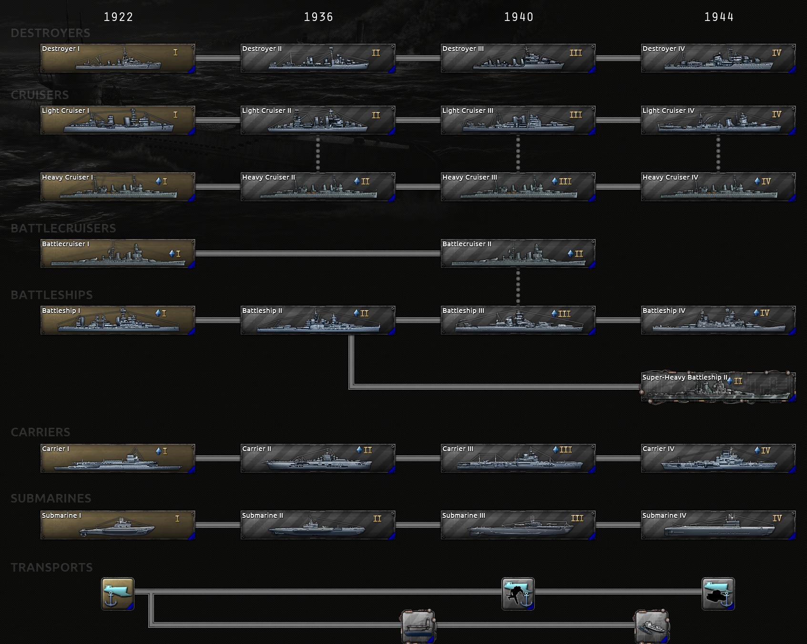

Naval科技（基础版）
原页面：Naval technology (Basic)
海军科技解锁可用 海军船坞建造的新舰船设计，以及若干有助于改进运兵船的设计。
海军船坞建造的新舰船设计，以及若干有助于改进运兵船的设计。
随着《诸神黄昏》引入特殊项目以及随之而来的补丁 1.15，所有海军科技在研究时现在也会产生船舶工程学突破进度。

海军科研树（不含 全民持枪）
全民持枪）
Destroyers
| 科技 | 年份 | 基础时间 | 前置条件 | 效果 | ||||||||||||||||||||||||||||
|---|---|---|---|---|---|---|---|---|---|---|---|---|---|---|---|---|---|---|---|---|---|---|---|---|---|---|---|---|---|---|---|---|
驱逐舰 I 为确保运输船队的安全，大战时期的驱逐舰必须加以改造和发展。为舰船装备更多鱼雷将带来更多交战机会。 |
1922 | 165 days | – |
| ||||||||||||||||||||||||||||
驱逐舰 II 更远的鱼雷射程与更快的装填速度，以及防空炮塔等新型武器，将使我们的驱逐舰继续保持高效与多用途。 |
1936 | 220 days | 驱逐舰 I |
| ||||||||||||||||||||||||||||
驱逐舰 III 为更好地应对来自空中与水下的威胁，新式驱逐舰必须配备雷达以及现代防空与反潜武器。 |
1940 | 220 days | 驱逐舰 II |
| ||||||||||||||||||||||||||||
驱逐舰 IV 现代驱逐舰必须配备各种不同的探测技术、新的深水炸弹投放系统，并且建造规模要比其前型更大。 |
1944 | 220 days | 驱逐舰 III |
| ||||||||||||||||||||||||||||
Cruisers
| 科技 | 年份 | 基础时间 | 前置条件 | 效果 | |||||||||||||||||||||||||||||||
|---|---|---|---|---|---|---|---|---|---|---|---|---|---|---|---|---|---|---|---|---|---|---|---|---|---|---|---|---|---|---|---|---|---|---|---|

轻巡洋舰 I 能够保持高航速的机动型轻巡洋舰，仍将在侦察任务中发挥作用。 |
1922 | 165 days | – |
| |||||||||||||||||||||||||||||||
轻巡洋舰 II 战后条约对巡洋舰施加了限制，但仍可在这些限制之内研制武装精良的轻型舰艇。 |
1936 | 220 days | 以下之一： |
| |||||||||||||||||||||||||||||||
轻巡洋舰 III 如今在条约限制的边缘游走，可以建造更大、装甲更厚的巡洋舰，而其武器仍足够轻，足以被归类为轻巡洋舰。 |
1940 | 220 days | 以下之一： |
| |||||||||||||||||||||||||||||||
轻巡洋舰 IV 现代轻巡洋舰在战术上用于保护更大型的舰船，它们能够摆脱以往的大部分限制，并配备更强的武器以应对空中攻击。 |
1944 | 220 days | 以下之一： |
| |||||||||||||||||||||||||||||||
重巡洋舰 I 《华盛顿海军条约》的订立旨在防止巡洋舰等舰种上的军备竞赛，但这看来已不可避免。保持装甲轻量，就能增加武器搭载量。 |
1922 | 165 days | – |
| |||||||||||||||||||||||||||||||
重巡洋舰 II 尽管又有了新的条约努力，为较轻型巡洋舰换装更重武器的做法依然高效，不过装甲仍然受到限制。 |
1936 | 220 days | 以下之一： |
| |||||||||||||||||||||||||||||||
重巡洋舰 III 随着各项限制在世界范围内日益被无视，可以建造更为均衡、更加重视装甲的重巡洋舰设计。更好的防空炮使这些舰船能够在海上空战中协同作战。 |
1940 | 220 days | 以下之一： |
| |||||||||||||||||||||||||||||||
重巡洋舰 IV 规模更大、舰身更长更重，并装备速射武器的设计，是重巡洋舰发展最后阶段的特征。 |
1944 | 220 days | 以下之一： |
| |||||||||||||||||||||||||||||||
Battlecruisers
| 科技 | 年份 | 基础时间 | 前置条件 | 效果 | |||||||||||||||||||||||||||||||
|---|---|---|---|---|---|---|---|---|---|---|---|---|---|---|---|---|---|---|---|---|---|---|---|---|---|---|---|---|---|---|---|---|---|---|---|
战列巡洋舰 I 战后的战列巡洋舰军备竞赛造就了武装极端强大的设计，与战列舰相比牺牲了装甲以换取航速。 |
1922 | 165 days | – |
| |||||||||||||||||||||||||||||||
战列巡洋舰 II 经过重建与改造的战列巡洋舰凭借较轻的防护，航速仍能超过甚至现代的战列舰设计，同时还发展出了更好的火控、探测与防空系统。 |
1940 | 220 days | 以下之一： |
| |||||||||||||||||||||||||||||||
Battleships
| 科技 | 年份 | 基础时间 | 前置条件 | 效果 | |||||||||||||||||||||||||||||||
|---|---|---|---|---|---|---|---|---|---|---|---|---|---|---|---|---|---|---|---|---|---|---|---|---|---|---|---|---|---|---|---|---|---|---|---|

战列舰 I 有人认为它们是海战旧时代的遗物，也有人认为它们是有史以来最令人惊叹的舰船；但无人能否认，这些战列舰军备竞赛的遗存是有史以来武装最重、装甲最厚的舰船之一。 |
1922 | 165 days | – |
| |||||||||||||||||||||||||||||||
战列舰 II 凭借更好的稳定性与航程，新一代战列舰在改进此前设计的同时，仍遵守海军条约规定的限制。 |
1936 | 220 days |
| ||||||||||||||||||||||||||||||||
战列舰 III 更厚的装甲、更强的发动机、一组大口径火炮以及改进的防空能力，可以让战列舰在海战日益由空中支援主导的世界中，只要运用得当，仍然保持其价值。 |
1940 | 220 days | 以下之一： |
| |||||||||||||||||||||||||||||||

战列舰 IV 当世界目睹可能是最后的大规模战列舰对决时，重型武器与防空炮塔的重要性比以往任何时候都更高。 |
1944 | 220 days | 战列舰 III |
| |||||||||||||||||||||||||||||||
超重型战列舰 II 在我们早先的超重型设计基础上的改进型号，拥有更强的武器与改进的火控系统。 |
1944 | 220 days | 战列舰 II |
| |||||||||||||||||||||||||||||||
航空母舰
| 科技 | 年份 | 基础时间 | 前置条件 | 效果 | ||||||||||||||||||||||||||
|---|---|---|---|---|---|---|---|---|---|---|---|---|---|---|---|---|---|---|---|---|---|---|---|---|---|---|---|---|---|---|
航空母舰 I 许多军事理论家认为海军航空兵代表着未来。把旧的主力舰与远洋邮轮改装为搭载飞机，将是运用这些新学说的第一步。 |
1922 | 165 days | – |
| ||||||||||||||||||||||||||
航空母舰 II 随着首批从龙骨开始设计的航母方案着手进行，我们必须确保这些舰船拥有足以跟上海军其余部队的航程与航速，同时遵守战后的海军条约。 |
1936 | 220 days | 航空母舰 I |
| ||||||||||||||||||||||||||

航空母舰 III 改进的建造方法与舷侧升降机等更专门的系统，使这些航母能够更高效地运送更多飞机。 |
1940 | 220 days | 航空母舰 II |
| ||||||||||||||||||||||||||

航空母舰 IV 随着许多海军条约如今日益被无视，我们可以着手建造能够搭载前所未有数量飞机的航空母舰，以确保提供制空权掩护。 |
1944 | 220 days |
| |||||||||||||||||||||||||||
潜艇
| 科技 | 年份 | 基础时间 | 前置条件 | 效果 | |||||||||||||||||||||||
|---|---|---|---|---|---|---|---|---|---|---|---|---|---|---|---|---|---|---|---|---|---|---|---|---|---|---|---|

潜艇 I 潜艇是专为消灭无防护的运输船队而设计的隐蔽舰艇。大战时期的早期型号为新的海战方式铺平了道路。 |
1922 | 165 days | – |
| |||||||||||||||||||||||

潜艇 II 新式潜艇设计武装更强、更加稳定，旨在利用海军战术的进步，并拥有更大的航程，能够袭击遥远的运输船队航线。 |
1936 | 220 days |
| ||||||||||||||||||||||||
潜艇 III 潜艇在舰队中除袭击运输船队之外的作用仍有争议。在速度、航程与武器之间取得平衡，将是研制所需型号的关键。 |
1940 | 220 days |
| ||||||||||||||||||||||||
潜艇 IV 更大的测试深度与高效的布局将成为现代潜艇的特点，并利用实战经验来选择适当的武器与发动机。 |
1944 | 220 days | 潜艇 III |
| |||||||||||||||||||||||
Transports
| 科技 | 年份 | 基础时间 | 可选加成 | 前置条件 | 效果 | ||||||||||||||
|---|---|---|---|---|---|---|---|---|---|---|---|---|---|---|---|---|---|---|---|
运输船 专为运送部队而设计的船只，不具备任何防御能力。 |
1922 | 165 days | – | – |
| ||||||||||||||

登陆艇 专用登陆艇让在敌占区登陆这件事稍稍不那么令人头疼。 |
1940 | 220 days | – |
| |||||||||||||||

高级登陆艇 先进的登陆艇意味着我们的士兵在登陆作战时能更快、更有效地登上滩头。 |
1944 | 220 days | – |
| |||||||||||||||

多产品补给舰 借助新生产的补给舰，我们可以确保燃料、弹药和补给品更顺畅地转运。 |
1938 | 220 days | 75 用于 |
| |||||||||||||||

标准化张力式海上并靠补给法 标准化张力式海上并靠补给法（Standardized Tenshioned Replenishment Alongside Method，简称 STREAM）是确保我方远洋海军行动获得稳定补给的进一步演进。 |
1943 | 275 days | 75 用于 |
| |||||||||||||||
 浮式船坞
浮式船坞秘密科技
这些科技仅在适当条件下对特定国家可用。其他国家仍然可以为基于这些科技所解锁船体的设计获取生产许可，但会承受通常的生产惩罚。
| 科技 | 前置条件 | 效果 |
|---|---|---|
| panzerschiffe |
开局即拥有此科技： 可解锁此科技：
|
|
前无畏舰
|
开局即拥有此科技： 可解锁此科技：
|
|
岸防舰
|
开局即拥有此科技：
可解锁此科技： |
|
参考资料
战争
| 政治 | 意识形态 • 阵营 • 国策 • 理念 • 政府 • 傀儡国 • 流亡政府 • 外交 • 世界紧张度 • 内战 • 占领 • 力量均势 |
| 生产 | 贸易 • 生产 • 建造 • 装备 • 燃料 • 军工组织 • 国际市场 |
| 科研与科技 | 科研 • 步兵科技 • 支援连科技 • 装甲科技（也包括 未拥有绝不后退）• 火炮科技 • 陆军学说 • 特种部队学说 • 海军科技（也包括 未拥有全民持枪）• 海军支援科技 • 海军学说 • 空军科技（也包括 未拥有以血盟誓）• 空军学说 • Engineering科技 • Industry科技 • 特殊项目 • 科学家 |
| 军事与战争 | 战争 • 和平会议 • 陆军单位 • 陆战 • 师编制设计 • 坦克设计 • 陆军编制器 • 集团军 • 指挥官 • 作战计划 • 战斗战术 • 舰船 • 舰船设计（伦敦海军条约）• 海战 • 飞机设计 • 空战 • 经验 • 军官团 • 损耗与事故 • 后勤 • 人力 • 核弹 • 突袭 |
| 间谍活动 | 情报 • 情报机构 • 特工 • 任务 • 行动 |
| 地图 | 地图 • 省份 • 地形 • 天气 • 州 |
| 事件与决议 | 事件 • 决议 |